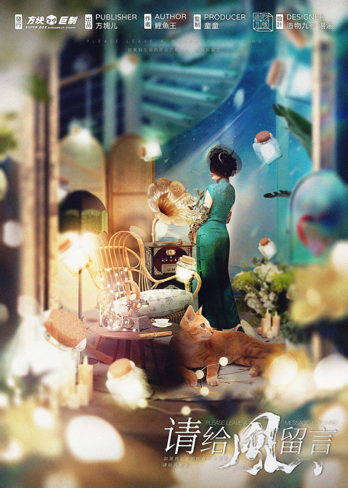
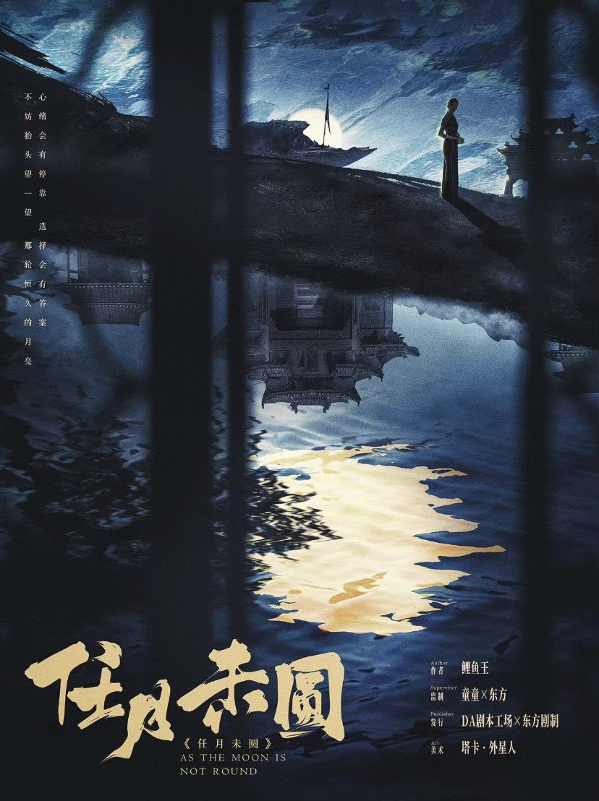
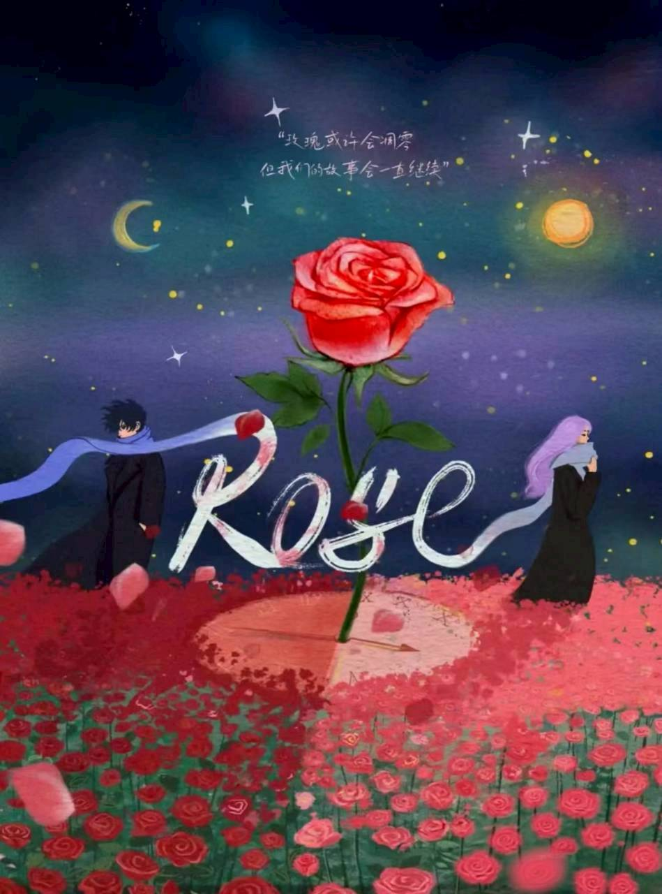
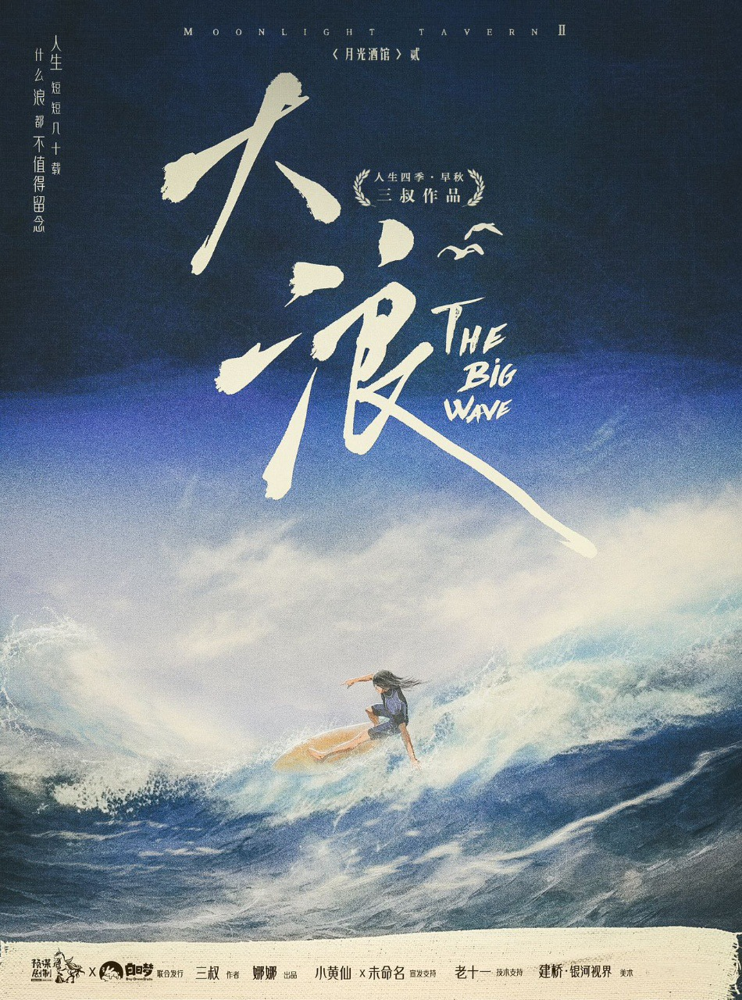
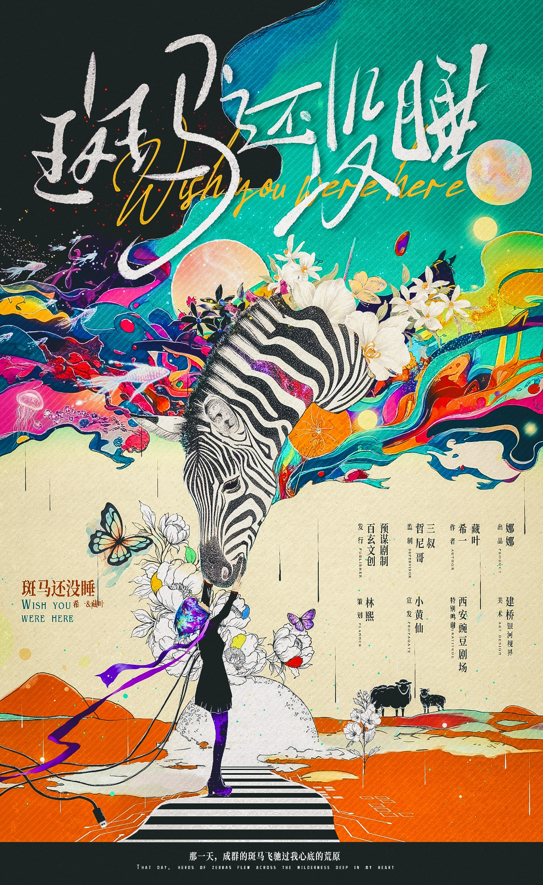
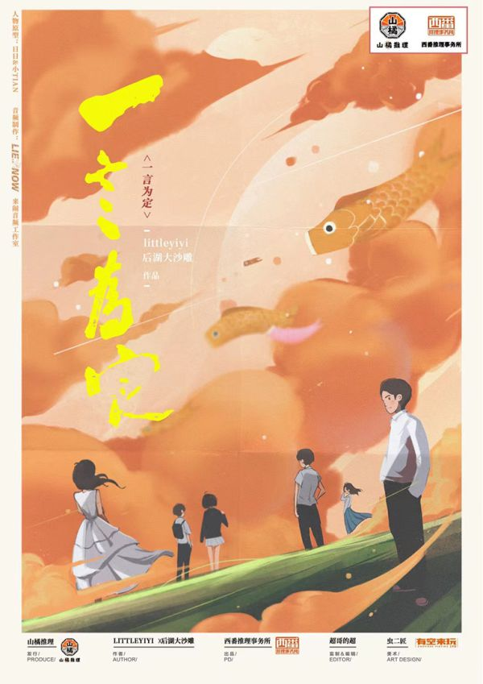

請給風留言
走進故事，聽見那些還沒說出口的話。
探索劇本 →每個故事，都是一段值得親身經歷的旅程。點選封面查看劇本介紹與角色資訊。

走進故事，聽見那些還沒說出口的話。
探索劇本 →
民初・情感・沉浸｜6 人｜5 小時
探索劇本 →
關於青春、相遇與成長的故事。
探索劇本 →
浪漫・微醺・思辨｜6 人｜9 小時
探索劇本 →
治癒・架空・情感｜6 人｜9 小時
探索劇本 →
情感・機制・超甜預警｜6 人｜4 小時｜難度 1.5/5